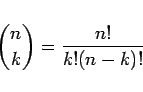
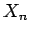
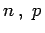

Inhalt Index DeskTop Bronstein

 Wahrscheinlichkeitsrechnung und Mathematische Statistik Wahrscheinlichkeitsrechnung Diskrete Verteilungen
Wahrscheinlichkeitsrechnung und Mathematische Statistik Wahrscheinlichkeitsrechnung Diskrete Verteilungen


Sind bei einem Versuch nur die beiden Ereignisse A und  möglich und sind die dazuzugehörigen Wahrscheinlichkeiten P(A) = p und , so ist
möglich und sind die dazuzugehörigen Wahrscheinlichkeiten P(A) = p und , so ist
die Wahrscheinlichkeit dafür, daß bei n-maliger Wiederholung des Versuches das Ereignis A genau k-mal eintritt.
Bei jedem Ziehen eines unabhängigen Elements aus der Grundgesamtheit gilt
| (16.63) |
Die Wahrscheinlichkeit, bei den ersten k Ziehungen ein Element mit der Eigenschaft A zu ziehen und bei den darauffolgenden n - k ein Element mit der Eigenschaft , ist , da die Ergebnisse der Ziehungen unabhängig von einander sind. Dabei ist die Reihenfolge der Ziehung der Elemente ohne Bedeutung, da die Kombinationen
|  | (16.64) |
die gleiche Wahrscheinlichkeit haben und auch zu einer Stichprobe mit dem Umfang n mit k Elementen der Eigenschaft A führen. Eine Zufallsveränderliche , bei der P(Xn = k) = Wnp(k) ist, heißt binomialverteilt mit den Parametern . Es gilt:
 |
(16.65a) |
| (16.65b) |
| (16.65c) |
Demnach läßt sich die Binomialverteilung für große n näherungsweise durch eine Normalverteilung mit den Parametern und ersetzen. Dies ist mit im allgemeinen ausreichender Genauigkeit möglich, wenn np > 4 und n(1-p) > 4 ist.
| (16.65d) |
In der folgenden Abbildung sind drei Binomialverteilungen für die Fälle und 0,1 dargestellt.

Die Abbildung zeigt auch, daß sich in Übereinstimmung mit der Symmetrie der Binomialkoeffizienten für p = q = 0,5 eine Symmetrie der Binomialverteilung ergibt. Mit der Entfernung des Wertes p von 0,5 nimmt diese Symmetrie ab.